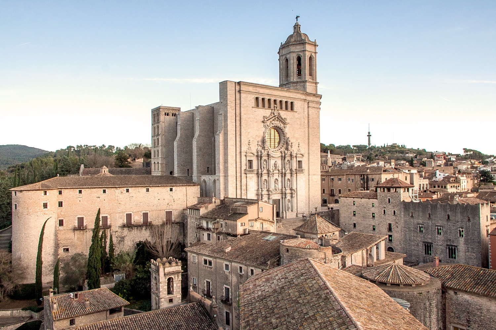
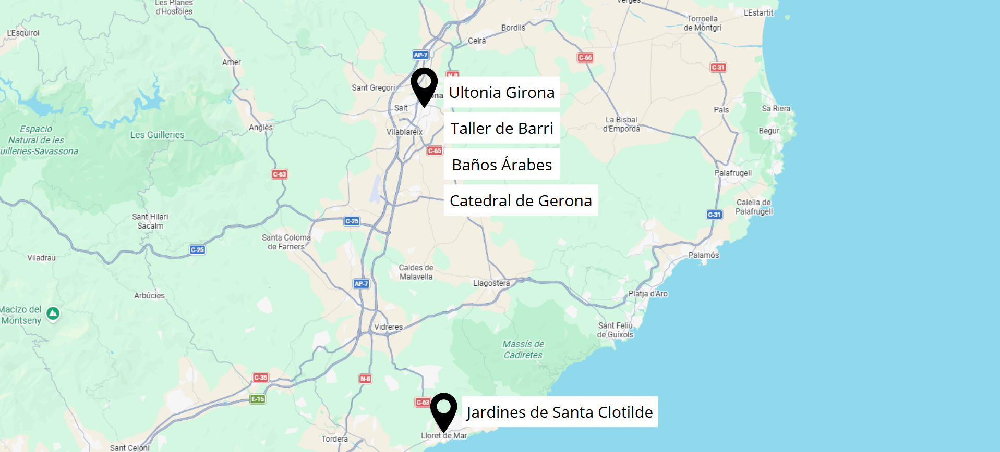

Gerona es uno de los escenarios más reconocibles de Juego de Tronos en España. Sus murallas medievales, la imponente Catedral de Santa María, los baños árabes y las callejuelas del Call Jueu fueron utilizadas para recrear tanto Desembarco del Rey como la ciudad libre de Braavos.
La ciudad combina una arquitectura monumenLa ciudad destaca por su excelente conservación histórica y su atmósfera medieval, que permite al visitante revivir escenas emblemáticas de la serie mientras descubre el pasado real del lugar.

Gerona ofrece una experiencia cultural completa, reforzada por su prestigiosa gastronomía catalana, sus festivales culturales y su equilibrio entre tradición y modernidad, convirtiéndose en el broche final perfecto para la ruta.
